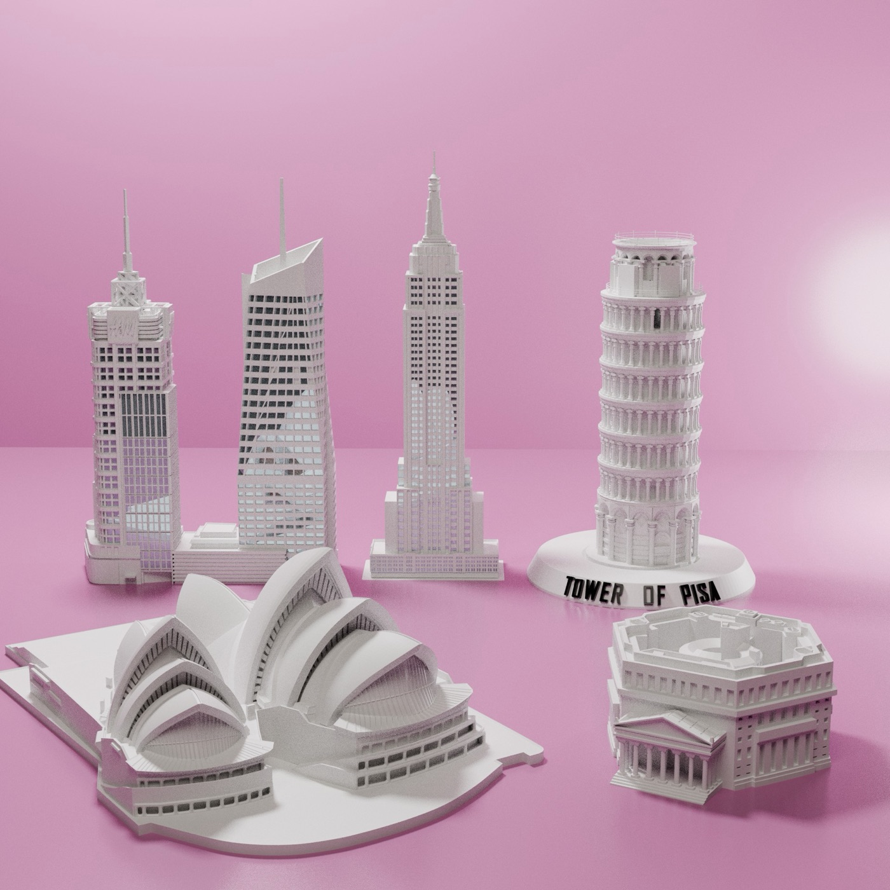
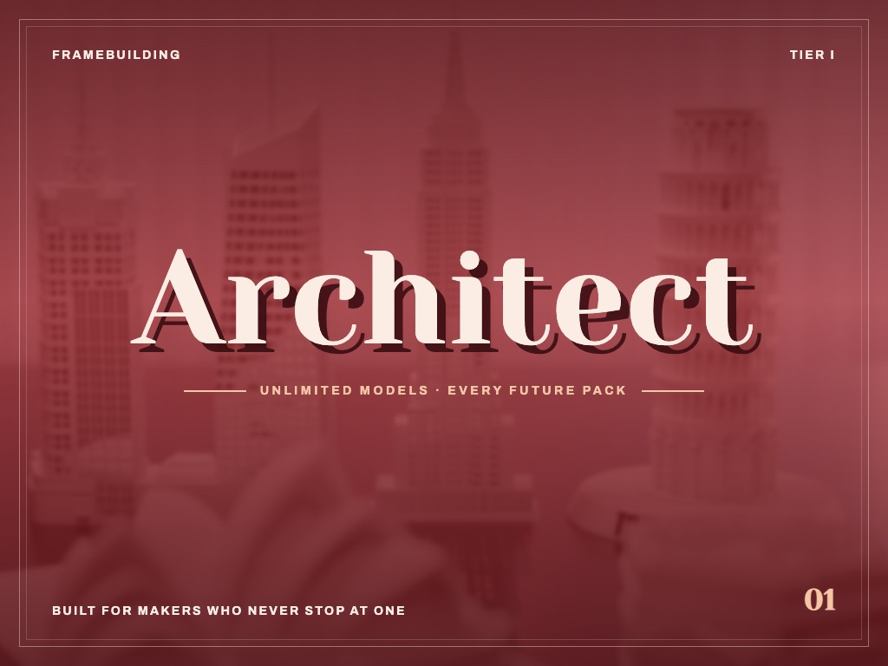
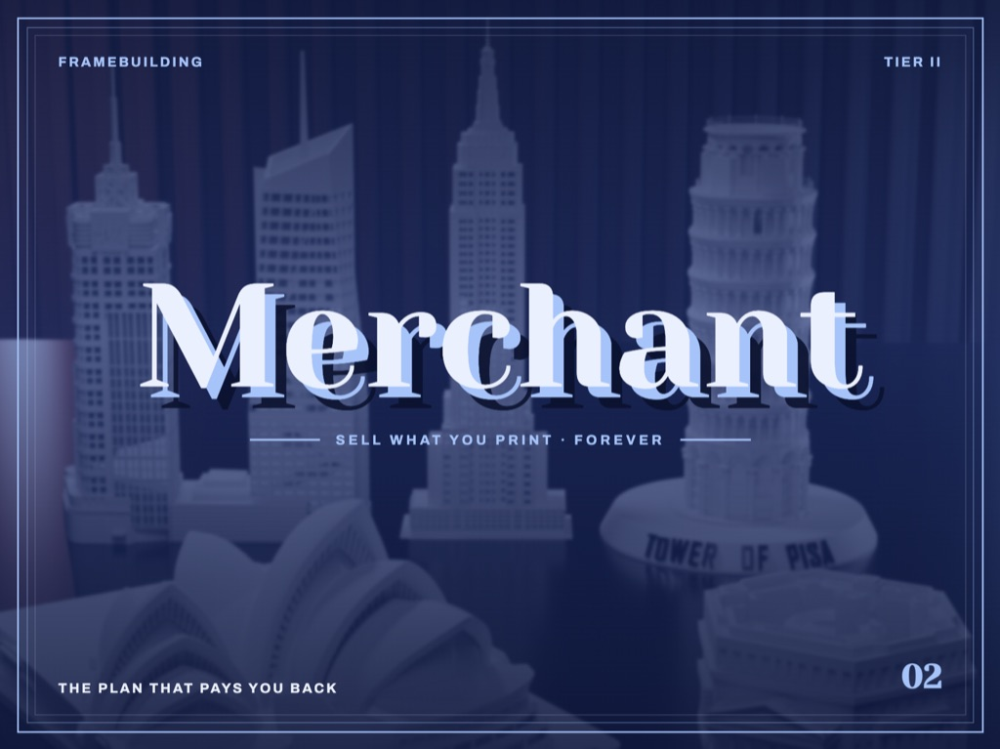
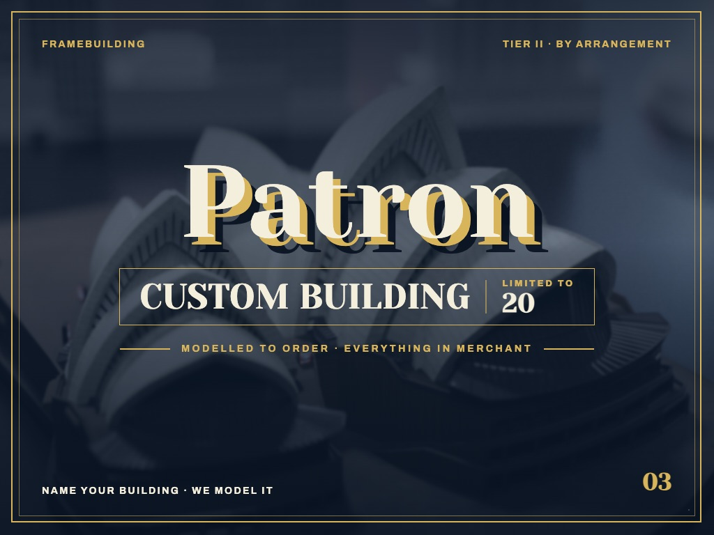

STEP01/03
Pick a building
Choose from a growing library of hand-modelled landmarks, from New York's Art Deco towers to Pisa's leaning campanile. New buildings are added through community votes.
See the library →Amiraé Studio · on MakerWorld
Hand-modelled landmark buildings, engineered for a perfect print. Pick a building, style its base, print it for your shelf.
With FrameCity, backers unlocked the stretch goal to print individual buildings, and kept asking for more. FrameBuilding takes that idea all the way: standalone landmarks, modelled from the ground up to stand on their own, on a base you design yourself.
→Every cornice, arch and column is rebuilt by hand into clean, print-ready parts. Never an automatic scan dump. Each model is test-printed until it holds, so the details survive at the size you actually print.
→Pick · Configure · Print
Every landmark starts in the archive: drawings, site surveys and reference imagery set the proportions before a single polygon is drawn. It is then rebuilt by hand in Blender into clean layers, test-printed on Bambu Lab machines until it holds, and released to the Studio for you to make your own.
Hand-Modelled Landmarks
We have already modelled more than 200 buildings for FrameCity. FrameBuilding rebuilds the most iconic of them as standalone models, each designed to stand on its own base and hold its detail at any print size, from desk ornament to display piece.

Empire State Building, 70 Pine Street, the Leaning Tower of Pisa, the Sydney Opera House and more, each researched, modelled by hand and test-printed before release.
More landmarks follow after launch. Backers vote on what comes next in our Discord, just as they did for FrameCity's cities.
Name a building that matters to you, whether it's your office, your hometown hall or a tower you love, and we will model it to order, to the same standard as every landmark in the library.
Custom buildings are part of the Patron reward, limited to 20 backers. Your building also comes with everything in Merchant.
Follow the build as new landmarks are modelled.
Join the Amiraé Discord to see work in progress, vote on the next buildings and get first word when the campaign goes live.
Join our Discord → contact@amirae.studioBack FrameBuilding on MakerWorld to unlock the Studio and the full library. Early birds take 30% off Architect and Merchant, limited to 100 backers each. Already a FrameCity backer? Sign in with the same account; FrameBuilding rewards are separate.

Built for makers who never stop at one.
Early bird 30% off · limited to 100
Pledge on MakerWorld →
The plan that pays you back.
Early bird 30% off · limited to 100
Pledge on MakerWorld →
Name your building. We model it.
Limited 20 places in total
Pledge on MakerWorld →Can't find what you need? Write to contact@amirae.studio. We reply within 24 hours.
No. FrameBuilding gives you digital, 3D-printable model files (.3MF and .STL) that you configure in the Studio, download, and print yourself or through a local printing service.
You need a printer, or access to one. The files are optimised for FDM printers and tested on Bambu Lab machines. You can also take the exported files to a print shop or an online printing service.
Production-ready .3MF and .STL files. The 3MF keeps each part separate (bases, tiers, roofs, domes and details) so you can assign filament colours in multi-colour setups such as the Bambu Lab AMS.
Yes. In the Studio you can add and stack bases, choose presets like a museum plinth or round pedestal, engrave text on any side, adjust scale and preview everything live in 3D. You can also rescale the exported file in your slicer.
Every landmark is researched from archival drawings, surveys and reference imagery, then rebuilt by hand and test-printed so that the proportions and details hold up at print scale.
With the Merchant or Patron reward, yes. Both include a commercial licence to sell what you print. Architect is for personal use.
FrameCity turns whole city districts into framed skyline art. FrameBuilding focuses on single landmarks as standalone models on bases you design. Both are made by Amiraé Studio and share one sign-in, but their rewards are separate.